Unidade 01
Semelhanças e diferenças entre o basquetebol e o corfebol
GlowImages/Alamy/Kim Kaminski
Introdução
Você conhece os esportes apresentados nas imagens?
Que semelhanças ou diferenças existem entre eles?
A partir deles, que tipo de questões é possível levantar em relação ao tema “diversidade”?
Objetivos da unidade
Compreender a origem das práticas corporais, reconhecendo-as como pertencentes à cultura de uma sociedade.
Conhecer e vivenciar os fundamentos do basquete.
Conhecer e vivenciar outras formas de jogar basquete.
Conhecer e vivenciar o corfebol.
Identificar as semelhanças e as diferenças entre o basquete e o corfebol.
Conhecer e valorizar a pluralidade cultural e as relações de gênero, identificando a origem de preconceitos.
Agir de forma cooperativa e solidária na realização das atividades e tarefas.
Participar da organização do evento comunitário, demonstrando empenho, respeitando a opinião dos demais e valorizando o protagonismo e o trabalho coletivo.
Os esportes podem ser classificados em dois grandes grupos: esportes coletivos e esportes individuais. Tal classificação se dá de acordo com o número de jogadores envolvidos nas ações e conforme as formas de comunicação que ocorrem nas
situações de jogo.
Considerando mais um nível de classificação, os esportes individuais e coletivos podem, ainda, ser subdivididos. Por exemplo, dentro dos esportes coletivos, encontram-se os esportes de invasão. Esse tipo de esporte
apresenta características específicas que incluem o fato de que a ação dos jogadores não se limita à quadra ou a um espaço determinado. Outra especificidade dos esportes de invasão está relacionada ao fato de que, para cumprir o
objetivo de marcar um ponto/gol, é preciso estar no campo do adversário, por isso se torna frequente o contato físico entre os jogadores de times adversários.
Visualize, no quadro, como acontece a classificação dos esportes em individuais e coletivos e conheça exemplos de esportes que têm interação e que não têm interação com adversários.
Tipo de esporte
Com interação com o adversário
Sem interação com o adversário
coletivo
individual
coletivo
individual
marca
–
–
corrida de revezamento
halterofilismo
precisão
–
–
bocha
tiro ao alvo
técnico combinatório
–
–
nado sincronizado
ginástica rítmica
combate
kabaddi
judô
–
–
rede
voleibol
tênis de campo
–
–
campo e taco
beisebol
–
–
–
invasão
handebol
–
–
–
Fonte: GONZÁLEZ, 2004.
É evidente, portanto, que, mesmo que a bocha e o vôlei sejam classificados como esportes coletivos, ambos apresentam características específicas, como o fato de um ter interação com adversário e o outro não. Além disso, para o jogo de
vôlei, são exigidos elementos específicos e diferentes daqueles necessários para a realização de um jogo de bocha. Em outras palavras, embora alguns esportes tenham a mesma classificação, apresentando, por isso, semelhanças, há sempre
particularidades que os distinguem dos demais. A seguir, conheceremos quais são as semelhanças e as diferenças entre o basquete e o corfebol.
Atividades
Organize um jogo de basquete com sua turma. Repare na dinâmica do jogo, pois você vai compará-lo com o jogo de corfebol nas próximas aulas.
Você em ação!
Para que você e sua turma consigam realizar o evento comunitário no final do semestre, é preciso seguir etapas que vão auxiliá-los nesse processo.
Pesquisa: organizar as comissões e iniciar uma discussão sobre as práticas a serem realizadas, enumerando as necessidades do evento (local, data, materiais).
Programação: listar as atividades que podem ser desenvolvidas. É importante começar essa etapa no primeiro bimestre, anotando as possibilidades de acordo com os conteúdos trabalhados.
Execução: depois de cumprir as etapas anteriores, realizar o evento. Essa etapa será tarefa a ser desenvolvida no próximo volume.
Avaliação: é uma etapa muito importante. A partir dela, é possível verificar o que deu certo ou não no evento realizado. Essa etapa também será realizada no próximo volume.
Antes de continuar, converse com os colegas e o professor e relembre quais foram os pontos positivos e negativos do evento realizado ano passado.
Basquetebol – fundamentos
O funcionamento de todos os esportes depende da execução de alguns movimentos específicos, chamados de “fundamentos técnicos”. Os principais fundamentos do basquetebol são: passe, recepção, drible e arremesso.
O basquete consiste em controlar a bola usando dribles e passes, para avançar no campo adversário, vencer a defesa e efetuar arremessos com o objetivo de encestá-la. A equipe adversária deve impedir que a cesta se concretize, buscando
a posse de bola, para que, por meio dos mesmos fundamentos, avance em direção ao campo adversário e finalize a jogada.
Como em qualquer esporte, a correta execução dos fundamentos do basquetebol é conquistada pelos atletas como resultado de empenho nos treinamentos. Um exemplo é a finalização perfeita do grande ídolo do basquetebol brasileiro Oscar
Schmidt, que ficou conhecido como “mão santa” pela sua precisão em acertar os arremessos de três pontos. Na verdade, ser “mão santa” era resultado de sua determinação em treinar muito mais do que a maioria dos jogadores. O próprio Oscar
preferia dizer, quando ainda jogava, que não era o “mão santa”, mas o “mão treinada”.
Oscar Schmidt ficou famoso pela grande quantidade de acertos nas cestas de 3 pontos.
O manejo da bola: os passes, a recepção, o drible e os arremessos
O manejo está associado ao domínio dos movimentos com a bola: lançar e segurar, quicar, trocar de mãos, rolar, entre outros. Ele dá suporte a todos os fundamentos do basquete, estando presente nas diversas situações de jogo.
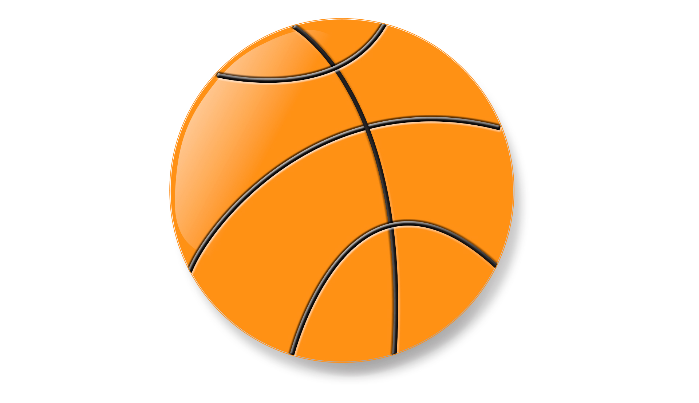
Adilson Farias. 2011. Digital.
Para executar os diversos movimentos do basquete, controlando a bola, é importante segurá-la com ambas as mãos, ficando atento para passá-la, driblá-la ou arremessá-la à cesta assim que oportuno.
Passes
São movimentos de lançamento e de recepção da bola realizados entre os jogadores de uma mesma equipe com a intenção de criar as melhores condições para o time passar da posição de defesa para a de ataque, possibilitando o arremesso à
cesta do adversário. Os diversos tipos de passes são realizados de acordo com o momento do jogo. Observe como e em que situação podem ser utilizados.
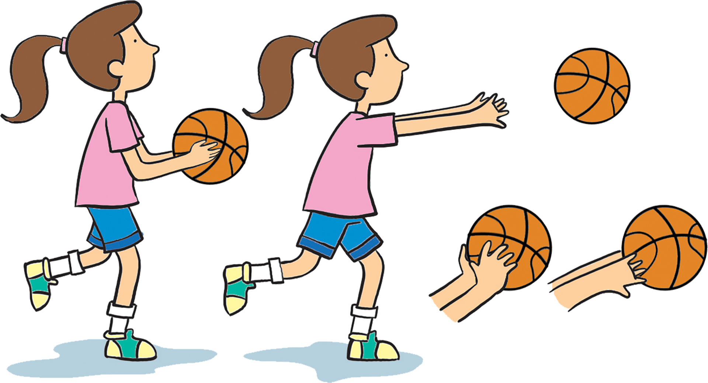
Adilson Farias. 2011. Digital.
Passe de peito: trazer a bola junto ao peito, dar um passo à frente e, ao mesmo tempo, estender os braços à frente do corpo, lançando-a na direção do movimento. Pode ser utilizado quando se está próximo ao
companheiro de equipe para o qual se deseja passar a bola.
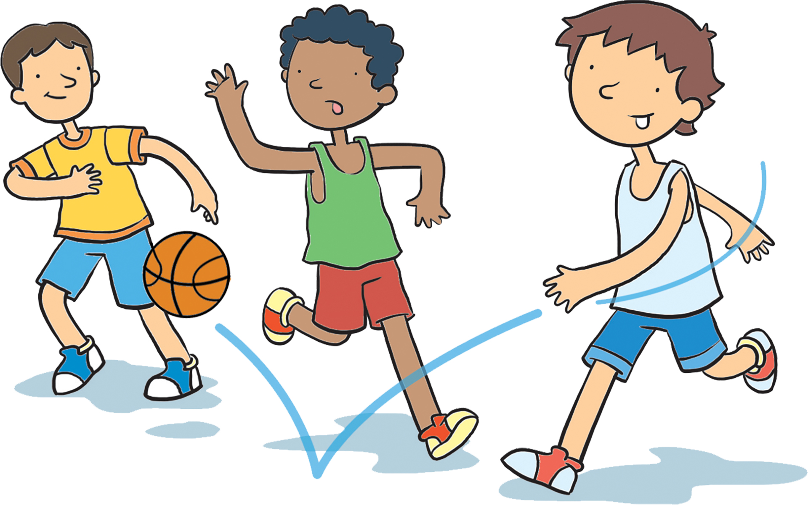
Adilson Farias. 2011. Digital.
Passe picado: realizar o passe com uma ou duas mãos fazendo a bola tocar no chão antes de chegar às mãos do colega. Utiliza-se quando o companheiro de time está próximo ou a uma distância média do passador. Pode ser
realizado em velocidade, em direção ao ataque.
Adilson Farias. 2011. Digital.
Passe por cima da cabeça: elevar a bola acima da cabeça com ambos os braços para depois lançá-la com um forte movimento dos pulsos, sem abaixar os braços. Pode-se utilizar esse tipo de passe em situações em que há um
adversário entre dois jogadores da mesma equipe.
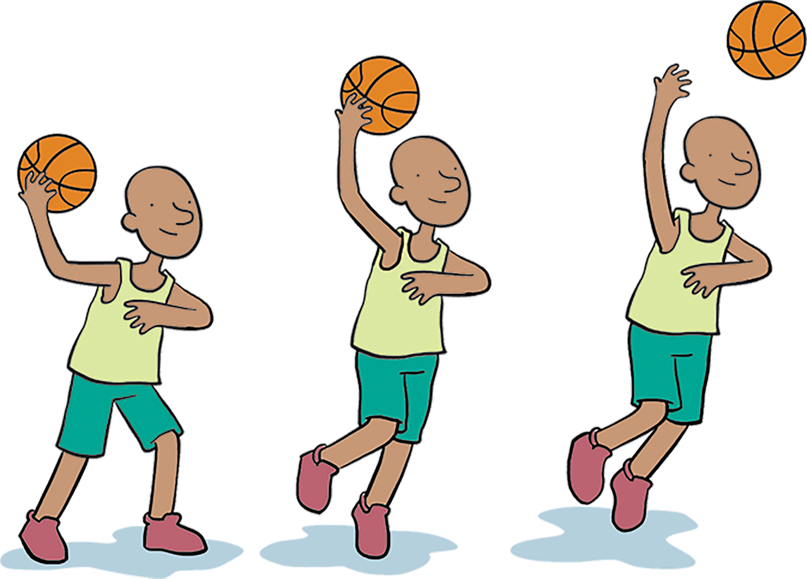
Adilson Farias. 2011. Digital.
Passe gancho: segurar a bola com a mão que vai lançá-la bem junto ao punho, deixando os dedos espalhados. Dando um passo para trás ou para o lado, realizar um salto com um giro no ar simultâneo ao lançamento da bola,
por meio de um movimento circundante do braço. Esse tipo de passe pode ser usado quando a equipe está próxima da cesta da equipe adversária.
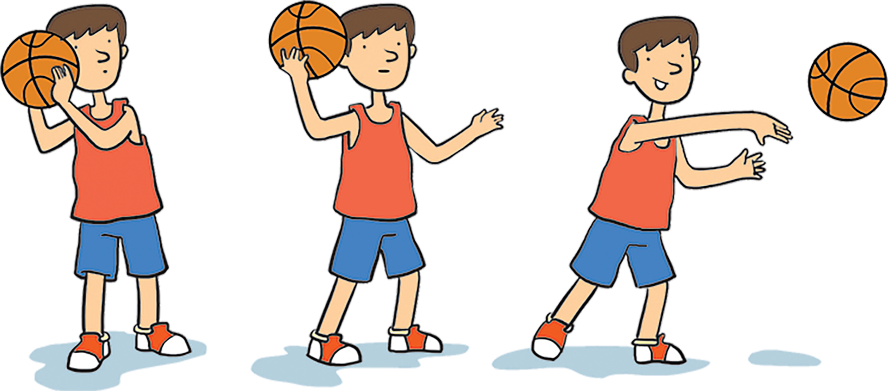
Adilson Farias. 2011. Digital.
Passe de ombro: segurar a bola com ambas as mãos, com os dedos apontados para cima. Os cotovelos devem estar flexionados, a bola deve ser mantida junto ao corpo com o ombro alto, e a execução do passe deve ser feita
pela extensão do braço, do cotovelo e do punho. Esse movimento pode ser utilizado para passar a bola em longas distâncias.
Recepção
Sempre após um passe, ocorre a recepção da bola. Quando feita corretamente, ela influencia a dinâmica do jogo, pois, caso o companheiro da equipe não receba a bola como deveria, pode perdê-la para um adversário. Seguem algumas dicas.
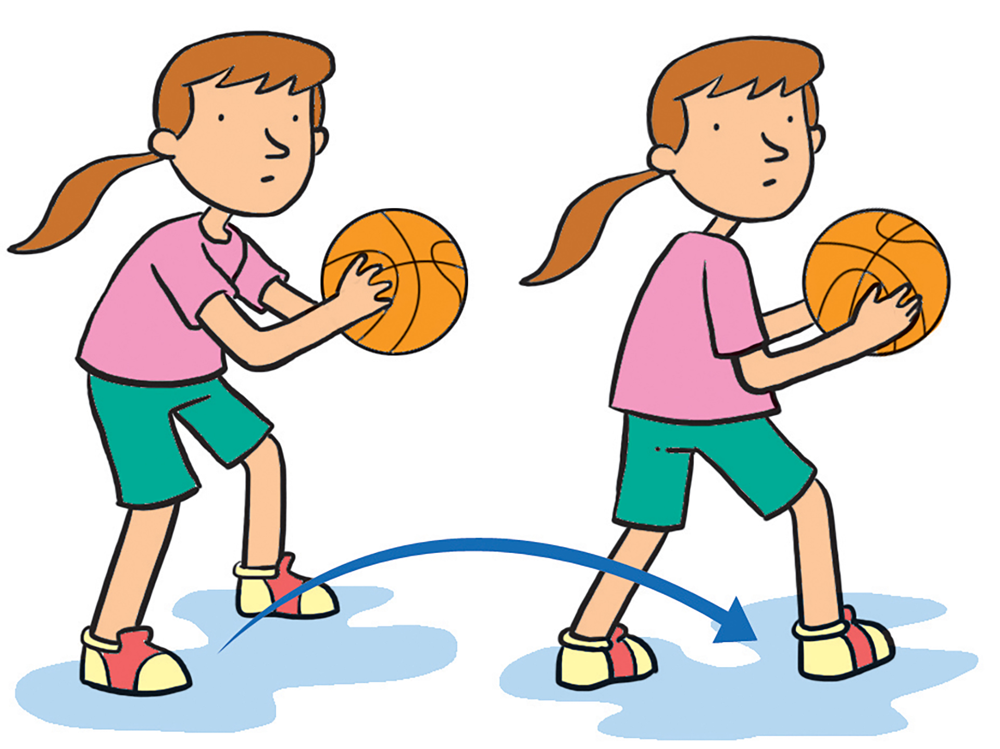
Adilson Farias. 2011. Digital.
No momento da recepção, o olhar deve se dirigir à bola e as mãos devem ficar em forma de concha, com os dedos bem afastados e esticados.
Depois, é preciso ir ao encontro da bola inclinando o tronco, com as mãos e os braços estendidos à frente do corpo.
Após a recepção, é necessário proteger a bola girando o tronco.
Drible
Outro fundamento muito importante para quem quer praticar o basquetebol é o drible – sendo este diferente daquele que se pratica no futebol.
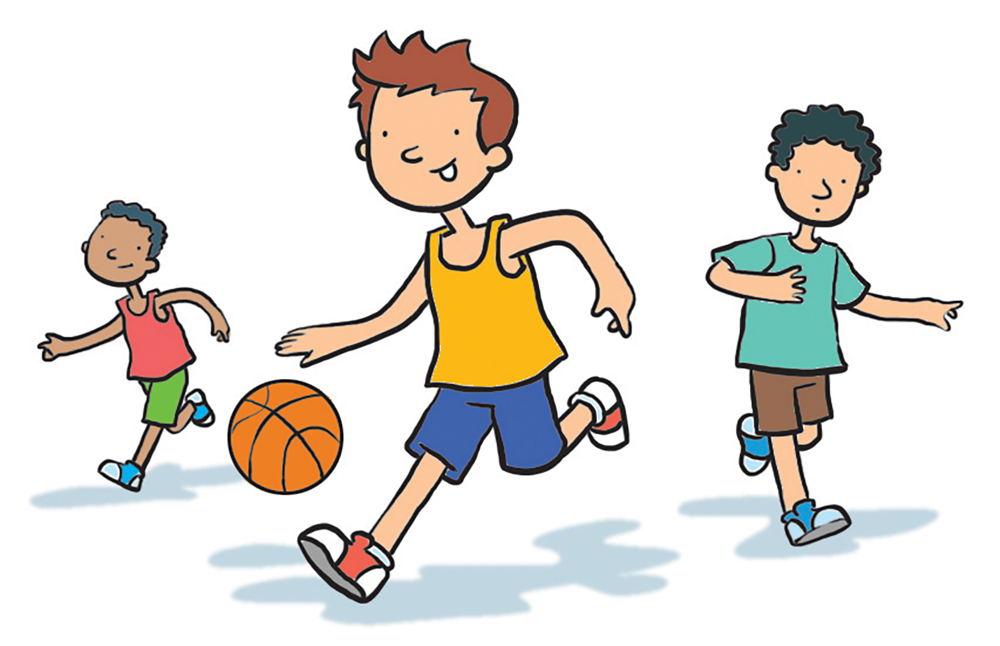
Adilson Farias. 2011. Digital.
No basquete, o drible corresponde ao deslocamento com a bola, que pode ser realizado de diversas maneiras: com troca de mãos (alto ou baixo); por trás do corpo; por entre as pernas; lateralmente (à direita e à esquerda); com giros (à
direita e à esquerda, para a frente e para trás, parado e em velocidade). Para realizá-lo, o corpo deve estar curvado para a frente, a cabeça, erguida, e os braços, semiflexionados. Nessa posição, é preciso manter a bola à frente e um
pouco ao lado do corpo, empurrando-a de encontro ao solo com a flexão do pulso e mantendo o movimento da bola da cintura para baixo.
Atividades
Como você já sabe, uma boa execução dos fundamentos – que só pode ser alcançada por meio da prática – é muito importante para qualquer esporte. Ouça as orientações do professor e pratique os fundamentos do basquete.
Arremessos
O arremesso é o fundamento de finalização das ações de ataque e tem como objetivo acertar a bola na cesta, marcando pontos. Para que ele aconteça, todas as ações da equipe que está no ataque devem ter como objetivo liberar um
companheiro para que ele o realize. Conheça, a seguir, algumas maneiras de executar o arremesso.
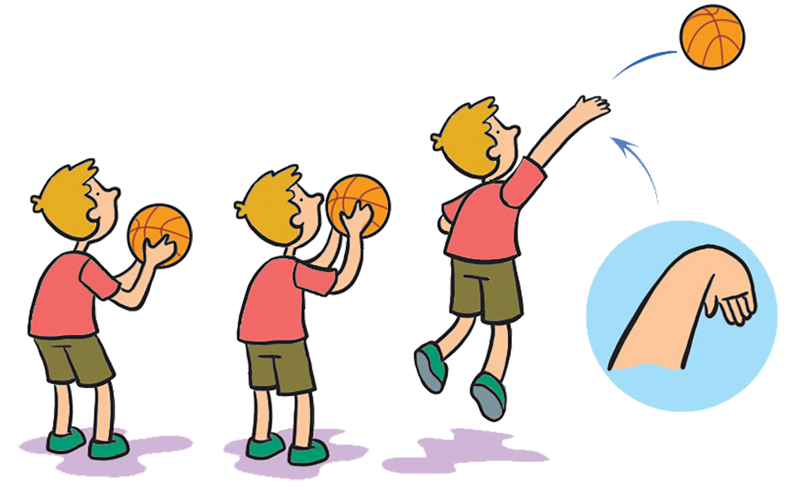
Adilson Farias. 2011. Digital.
Arremesso com uma das mãos: os braços e as pernas devem estar flexionados e o jogador deve estar atento à cesta. Em seguida, as pernas devem se estender simultaneamente aos braços, enquanto a bola deve ser lançada ao
alto, descrevendo uma curva. Pode ser utilizado para os arremessos próximos à cesta, como nos casos de lance livre.
O lance livre é o tipo de arremesso efetuado pelo jogador parado, atrás da linha de lance livre. Acontece sem marcação adversária e tem cinco segundos para ser executado. É como o pênalti do futebol.
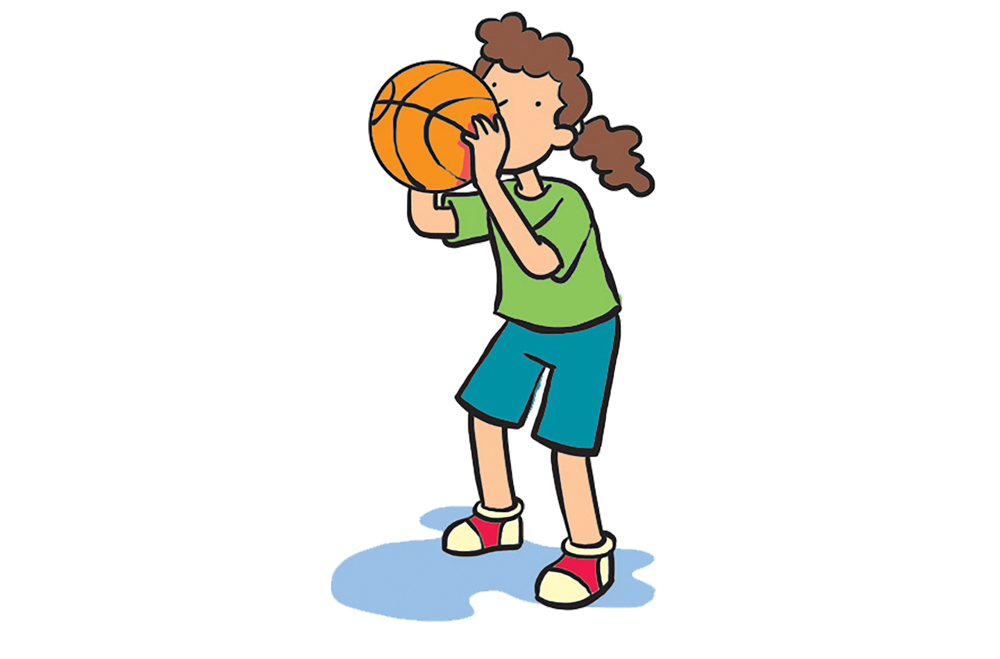
Adilson Farias. 2011. Digital.
Arremesso com as duas mãos: com execução igual à do arremesso com uma das mãos, pode ser usado em qualquer situação, sendo adequado às situações de arremessos de longa distância.
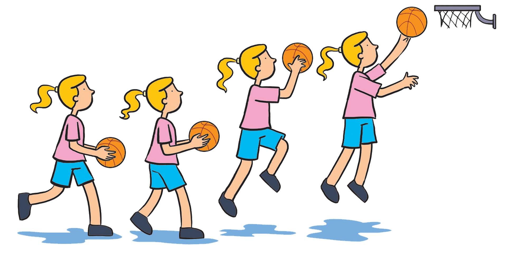
Adilson Farias. 2011. Digital.
Bandeja: realizada quando o jogador se encontra próximo à cesta adversária e recebe um passe ou interrompe o drible. Caracteriza-se pela execução dos passos em dois tempos rítmicos, com impulsão em uma só perna,
direita ou esquerda. No primeiro passo, é feito o apoio com uma das pernas e, no segundo, o impulso, em que o joelho da outra perna eleva-se flexionado para a frente. A bola deve ser lançada à cesta antes que o jogador toque o solo.
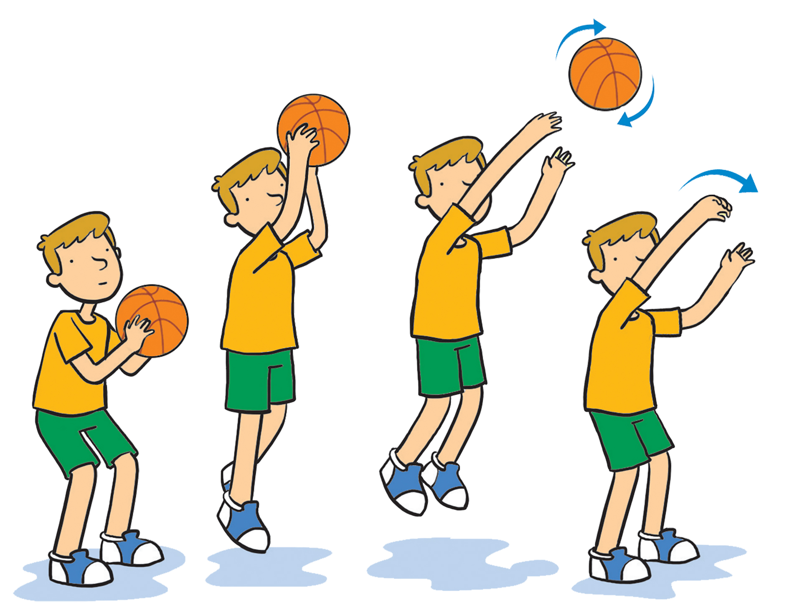
Adilson Farias. 2011. Digital.
Jump: pode ser realizado estando o jogador parado, ou após deslocamento na forma de drible, próximo ou distante da cesta. Em uma posição de equilíbrio, o jogador deve flexionar as pernas para impulsionar o
salto. No momento do salto, deve elevar a bola com ambas as mãos – preferencialmente acima e à frente da cabeça – e finalizar o arremesso apenas com uma delas.
Atividades
Agora vamos vivenciar alguns tipos de arremessos realizando diferentes atividade lúdicas. Lembre-se: mais importante do que acertar é se esforçar para atingir o objetivo!
Você em ação!
Conhecer os fundamentos do basquete é importante para que você possa vivenciar essa prática corporal e até mesmo recriá-la. Por isso, o desempenho de cada um na execução dos fundamentos não deve ser impeditivo para a prática desse
esporte e de suas formas adaptadas na escola. Se o basquete for uma das práticas escolhidas para ser realizada no evento comunitário, é preciso pensar sobre como esse esporte pode promover a diversidade respeitando a todos. Além
disso, sobre a realização do evento, já é hora de começar a se perguntar: Quais são os objetivos? Quem poderá participar?
Basquete de rua
O basquete de rua, ou streetball, originou-se nos Estados Unidos e está ligado aos movimentos urbanos que o associam a um estilo de vida de jovens que, em geral, além de jogá-lo, têm o hip-hop como forma de expressão
da identidade. O hip-hop une a música rap com a dança break e a expressão artística do grafite.
Uma das características desse jogo é o uso diferenciado dos fundamentos do basquete para a construção de jogadas improvisadas e de efeito, como os dribles sensacionais e as enterradas. Por isso, para que jogadas interessantes possam ser
criadas, o jogo exige um bom manejo da bola e ótimo domínio dos fundamentos.
Para tornar as jogadas mais emocionantes e criativas, algumas adaptações nas regras do basquetebol de quadra foram realizadas. Um exemplo é o fato de os movimentos de conduzir e andar com a bola não serem considerados infração, desde que
essas ações não sejam usadas para finalizar a jogada com arremesso. A regra referente ao número de jogadores também é outra: são permitidas desde disputas individuais (um contra o outro) até disputas de grupos com cinco jogadores (cinco
contra cinco).
O basquete de rua tem forte relação com o movimento hip-hop. O grafite também é um dos elementos que, juntamente com o rap e o break, associam-se a essa modalidade.
O movimento hip-hop é uma das muitas expressões culturais criadas como forma de resistência contra a violência e a desigualdade social. A organização de festas com música rap e com o break foi uma das formas
encontradas por lideranças de bairros com população majoritariamente afrodescendente de Nova Iorque para diminuir as brigas de gangues nas ruas. Mas qual a origem dos problemas sociais da população afrodescendente dos EUA?
Uma das causas da situação desigual na qual ainda vive essa população foi a existência de leis raciais que determinavam que afrodescendentes não podiam frequentar os mesmos ambientes que pessoas brancas: de acordo com a cor da pele,
havia ônibus, escolas, bancos e bebedouros públicos diferentes.
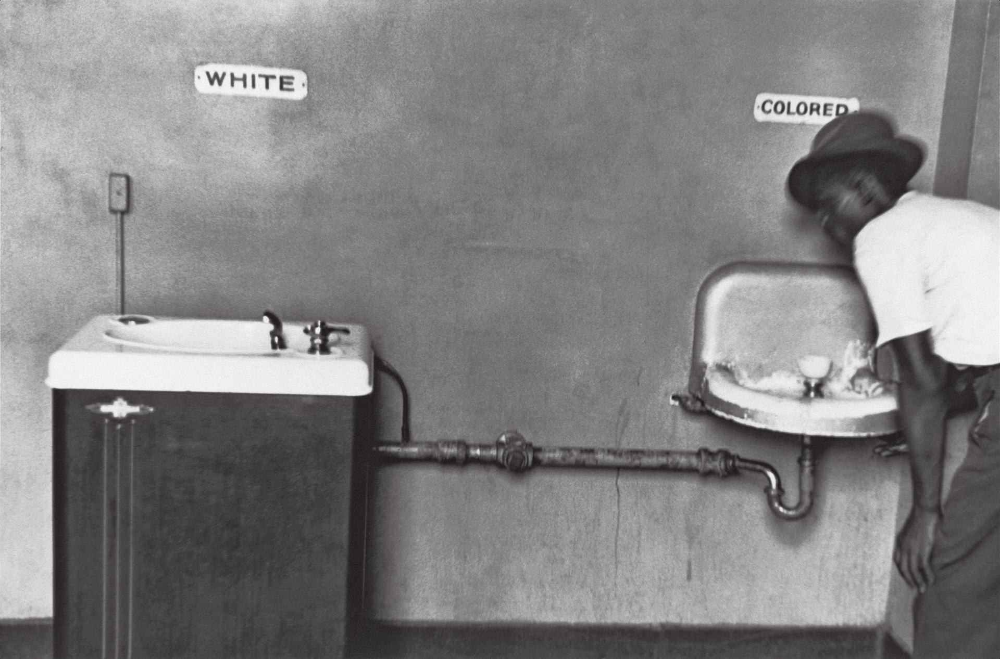
Latinstock/Magnum Photos/Elliott Erwitt
Durante a vigência das leis raciais nos EUA, as pessoas eram separadas em função da cor da pele: havia ônibus, escolas, bancos e bebedouros públicos específicos para pessoas brancas e diferentes dos destinados aos
afrodescendentes.
A situação causou uma série de revoltas na população afrodescendente, que lutava pelo fim desse separatismo. Um exemplo de resistência foi o importante caso de Rosa Parks, uma costureira que se recusou a ceder assento no ônibus a um
homem branco, como determinava a lei. Esse fato, aliado à luta de muitos ativistas, como Martin Luther King Jr., causou grande pressão sobre a sociedade estadunidense, levando o então presidente, Lyndon Johnson, a assinar, em 1964, uma
nova lei de direitos civis que deu fim às determinações que separavam pessoas afrodescendentes de brancas.
Contudo, mesmo com a alteração da lei, a cultura do país permaneceu por muitas décadas presa a essa separação e até hoje os efeitos da desigualdade persistem. As pessoas afrodescendentes, nos EUA, sofrem mais com o desemprego, têm
menos tempo de educação escolar e menor renda familiar e expectativa de vida do que as pessoas brancas.
Toda essa condição social fez com que as gangues fossem vistas como um meio violento de os jovens expressarem sua insatisfação. O movimento hip-hop surgiu na tentativa de canalizar essa energia para fins culturais, envolvendo
a música, a dança e o grafite.
Rosa Parks foi presa porque se recusou a ceder lugar no ônibus a um homem branco, como ordenava a lei.
Atualmente, é quase difícil acreditar que existiram leis que separavam pessoas, em locais de circulação pública, de acordo com a cor da pele. Embora ainda exista preconceito de todos os tipos, muitas questões já foram superadas pelas
gerações atuais. Por isso, ao olhar para exemplos de nosso passado histórico, devemos compreender que a diversidade de etnias, culturas e modos de ser deve ser respeitada e valorizada. As diferenças não devem ser causa de desigualdades.
Todos devem ter os mesmos direitos à educação, à cultura, à saúde e ao trabalho.
Atividades
Você já ouviu falar da jogada hurrycane? É uma das jogadas de efeito do basquete de rua. Organize seu time e conheça mais sobre essa expressão do basquete.
Você em ação!
O basquete de rua é uma modalidade que pode fazer parte do evento comunitário. Em função de ter regras menos rígidas, possibilitar a formação de equipes com número variado de integrantes e de apresentar uma exigência técnica
diferenciada, essa forma de jogar o basquete pode ser adaptada ao espaço escolar e experimentada por toda a comunidade. Além disso, ao realizar disputas de basquete de rua, questões sociais, culturais e étnicas podem ser abordadas.
A luta da população afrodescendente por direitos iguais nos EUA e a cultura hip-hop são questões importantes que podem ser debatidas durante o evento, inclusive em consonância com outros componentes curriculares. Essas discussões
também devem ser pensadas e previstas ao longo das etapas de pesquisa e programação do evento.
Organize as ideias
Antes de conhecer o corfebol, é importante retomar os fundamentos básicos do basquetebol. Compreendê-los é fundamental para perceber as semelhanças e as diferenças entre as duas práticas corporais vivenciadas neste capítulo. Para isso,
retome o material e preencha, a seguir, o quadro sobre esse esporte.
Fundamento
Tipos
Função
drible
passe
recepção
arremesso
Corfebol e diversidade
Apesar de pouco conhecido no Brasil, o corfebol é bastante praticado na Europa, sendo reconhecido pelo Comitê Olímpico Internacional desde 1993. A modalidade tem uma federação internacional, fundada em 1933, que
organiza competições e campeonatos mundiais.
Em holandês, o corfebol é conhecido como korfball: união de korf (que significa cesta ou cesto) e ball (que significa bola).
O corfebol foi criado pelo holandês Nico Broekhuysen na virada do século XX, mais precisamente no ano de 1902. Uma de suas preocupações era de que o novo esporte tivesse características competitivas ao mesmo tempo que deixasse aspectos
cooperativos em evidência. Por isso, Nico optou por unir características do basquetebol e do handebol em um mesmo jogo. Além disso, o corfebol apresenta uma peculiaridade que o distingue da maioria dos esportes: as equipes são mistas,
formadas por quatro homens e quatro mulheres.
No corfebol, homens e mulheres compõem uma mesma equipe.
Logo após ser criado, surgiram vários clubes de corfebol, o que contribuiu para consolidar definitivamente a sua prática na Holanda. Rapidamente, a modalidade foi se difundindo pela Bélgica, país vizinho. Posteriormente, após a Segunda
Guerra Mundial, propagou-se também por outros países da Europa (Inglaterra, Dinamarca, Alemanha, Espanha e Portugal), da Oceania (Austrália) e da América do Norte (Estados Unidos).
Recentemente, o corfebol começou a ser divulgado no Brasil, principalmente no estado do Rio de Janeiro. Inicialmente praticado em campo de grama ao ar livre, hoje as competições oficiais de corfebol são realizadas em quadras cobertas.
Entretanto, como prática de lazer, o esporte tem sido adaptado para diferentes superfícies, como grama artificial, areia e, até mesmo, água.
Entrando em campo
O corfebol pode ser utilizado nas aulas de Educação Física como meio de integração entre meninos e meninas, pois exige a formação de equipes mistas, o que supera uma das características apresentadas em geral pelos esportes de
rendimento: a separação de equipes por sexo – divisão também presente em outros setores no dia a dia das escolas.
O corfebol pode ser um meio de incentivar a participação das meninas nos esportes.
A esse respeito, aproveite o momento para conversar com seus colegas e professor sobre a relação entre meninos e meninas na sua turma: Como vocês dividem o espaço nas aulas de Educação Física? E nos horários de intervalo ou recreio?
Quem utiliza mais a quadra no tempo livre? Quais são as práticas que meninos e meninas realizam nesses momentos? É possível realizar práticas de forma conjunta?
Debater essas questões é o primeiro passo para a superação de preconceitos.
Atividades
Assim como os demais esportes praticados na escola, vamos adaptar o corfebol para as aulas de Educação Física. Fique atento às regras e boa aula!
As regras e os fundamentos do corfebol
Em geral, o corfebol vivenciado na escola apresenta regras adaptadas, adequando-se ao espaço escolar. Porém, para que você possa compreender a dinâmica desse jogo, tornando-se capaz de transformá-lo, é importante conhecer suas regras
principais.
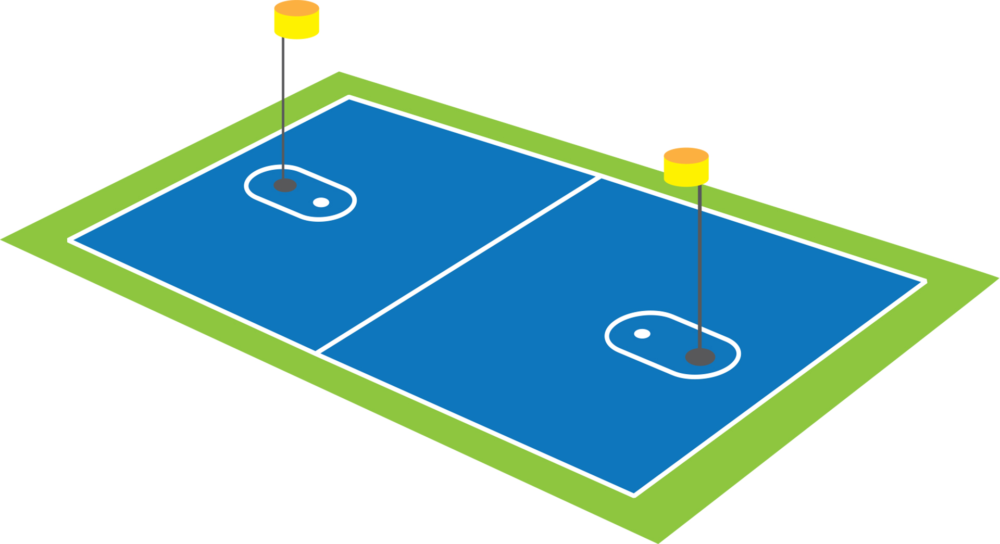
Quadra
40 x 20 metros. A marca das penalidades deve ser traçada a 2,50 mvetros do cesto, no sentido da linha central.
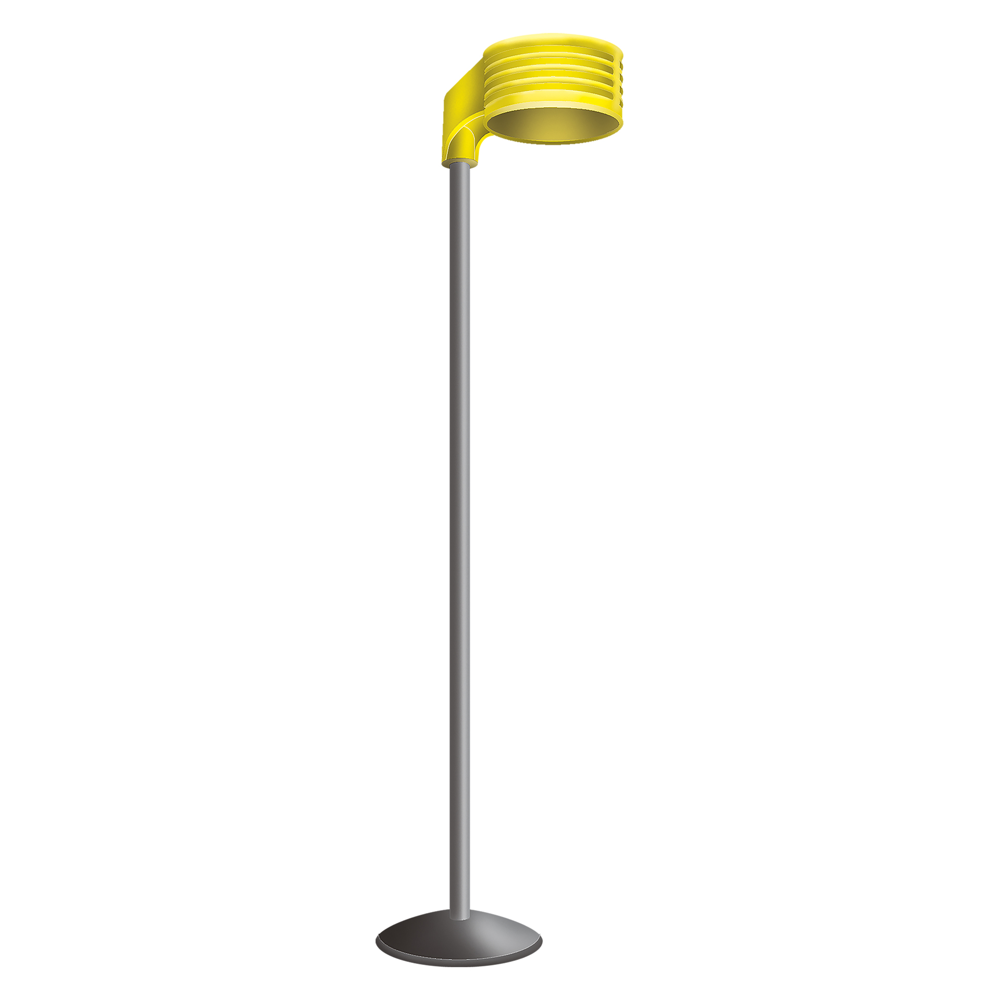
Equipamentos – poste e cesto
Cada lado da quadra tem um poste de 3,5 metros de altura com um cesto fixado em sua extremidade. O cesto tem 25 centímetros de altura e um diâmetro que pode variar entre 39 e 41 centímetros. Os postes devem ficar a uma distância de
6,7 metros da linha de fundo, partindo do centro dela. A cor do cesto deve ser, de preferência, amarela brilhante.
Tempo
Dois tempos de 30 minutos com dez minutos de intervalo.
Os jogos são disputados por duas equipes, cada uma composta de quatro jogadores do sexo feminino e quatro do sexo masculino, dos quais dois homens e duas mulheres são colocados em cada uma das zonas: de ataque e de defesa. A cada
duas cestas, a dupla que estava no ataque troca de posição com a dupla que estava na defesa.
Dinâmica de jogo
No corfebol, não é permitido
tirar a bola da mão do adversário;
andar com a bola;
executar o drible;
marcar um jogador do sexo oposto;
mais do que um marcador para cada atacante;
contato físico;
que um jogador efetue o arremesso se acontecerem as seguintes situações:
– houver, à sua frente, um defensor do sexo oposto;
– o defensor estiver com o braço levantado tentando bloquear o arremesso;
– o defensor estiver mais próximo do cesto.
Os fundamentos do corfebol são semelhantes aos do basquete, mudando um pouco a forma de execução dos gestos técnicos. Os principais fundamentos do jogo são: passes (de peito, de ombro e picado) e arremessos (de curta, média e
longa distância e bandeja e arremesso de penalidade).
Atividades
Agora que você já conhece o corfebol e aprofundou seus conhecimentos sobre o basquetebol, sua tarefa é criar um novo jogo com base nessas duas práticas. Em grupo, ouçam as explicações do professor, sigam suas orientações para o
preenchimento da tabela e mãos à obra!
TABELA DE CONFECÇÃO DO NOVO JOGO
Nome do jogo
Espaço, equipes e funções
Objetivos
Regras
Sistemas de pontuação
Conexões
A principal característica do corfebol é a presença de jogadores de sexos diferentes em uma mesma equipe. Na época de seu surgimento, as mulheres tinham pouco acesso tanto aos esportes quanto a outras funções representativas da
sociedade. A invenção desse jogo, portanto, representou um avanço por incluir as mulheres nos esportes em situação de igualdade de oportunidades.
Ao longo da história do esporte, a participação feminina nas modalidades esportivas sempre foi objeto de discussão. Nos Jogos Olímpicos da Antiguidade, as mulheres eram proibidas de participar ou assistir aos jogos, que eram destinados
somente aos cidadãos gregos – na Grécia Antiga, para que uma pessoa fosse considerada cidadã, ela deveria ter condições de guerrear, papel que não era exercido pelas mulheres.
Após um período de esquecimento, os Jogos Olímpicos foram revividos em 1896. Nessa ocasião, a participação feminina também foi vetada, sendo permitido às mulheres apenas assistir aos jogos. Como forma de protesto, a grega Stamati
Revithi realizou a maratona fora do estádio, no dia seguinte da prova oficial, provocando uma discussão a respeito da participação feminina nas olimpíadas.
Nos Jogos Olímpicos de Paris, em 1900, as mulheres puderam participar das modalidades de golfe e tênis de forma não oficial, ou seja, as vencedoras das provas não ganharam medalhas ou a coroa de oliveiras, símbolo dos Jogos Olímpicos
da Antiguidade.
Em 1917, a francesa Alice Melliat fundou a Federação Esportiva Feminina Internacional (Fefi), que passou a promover o esporte feminino, organizando os Jogos Olímpicos Femininos, em 1922. O sucesso do evento e das edições seguintes – em
1926, 1930 e 1934 – pressionou o Comitê Olímpico Internacional a integrar as mulheres nas olimpíadas.
Até 1936, as mulheres não eram reconhecidas como atletas nos Jogos Olímpicos.
Apesar de todas essas conquistas, a luta das mulheres para ocupar os espaços sociais ainda continua em todo o mundo. Um exemplo é o caso da jovem paquistanesa Malala Yousafzai.
Malala Yousafzai, a jovem que se tornou símbolo da luta das mulheres em todo o mundo
Com apenas 15 anos de idade, ela foi baleada na cabeça dentro do ônibus que a levava para a escola. O atentado foi realizado pelo grupo talibã que governa a região natal de Malala, no vale do Swat, no Paquistão, e que tem como intuito
impedir que as jovens frequentem a escola. Segundo os preceitos defendidos por essa organização, as mulheres não devem estudar nem assumir posições na vida pública ou política, as quais são destinadas apenas aos homens.
Mesmo depois de quase perder a vida, Malala continua lutando pelo direito de estudar das meninas. O reconhecimento de sua luta veio com o Prêmio Nobel da Paz, em 2014.
Atividades
Chegou a hora de apresentar o jogo criado por você e seu grupo. Não se esqueça de dizer quais são as regras, os objetivos e de definir o espaço em que ele será realizado. Além de apresentar o seu jogo, é fundamental que você vivencie
os jogos criados pelos demais grupos.
Você em ação!
Chegamos ao final do primeiro capítulo. Com ele, você pôde conhecer mais sobre o basquetebol e o corfebol, identificando suas semelhanças e diferenças. Nesse momento, você já tem duas possibilidades de esportes que podem ser
trabalhados no evento comunitário.
A realização de um torneio de corfebol na escola pode ser uma possibilidade de incluir toda a comunidade na realização de uma prática corporal, em função de a modalidade propor uma composição mista de equipes.
A questão da diversidade está presente tanto no basquetebol – o basquete de rua é uma vertente da modalidade que se relaciona intimamente com o movimento hip-hop, o qual procurou dar voz a comunidades marginalizadas – quanto no
corfebol – a conquista das mulheres por mais espaço na sociedade pode ser abordada a partir dessa prática esportiva. Portanto, ao realizar a prática desses esportes, é importante propor questionamentos à comunidade, deixando claro,
de alguma forma, que essas são modalidades que promoveram a inclusão do que é diferente em âmbitos até então incomuns e por meio de formas antes não idealizadas.